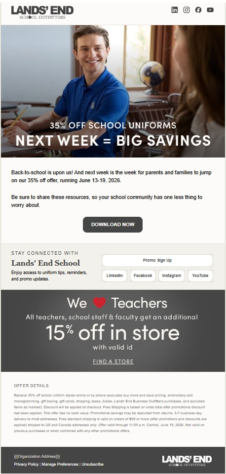
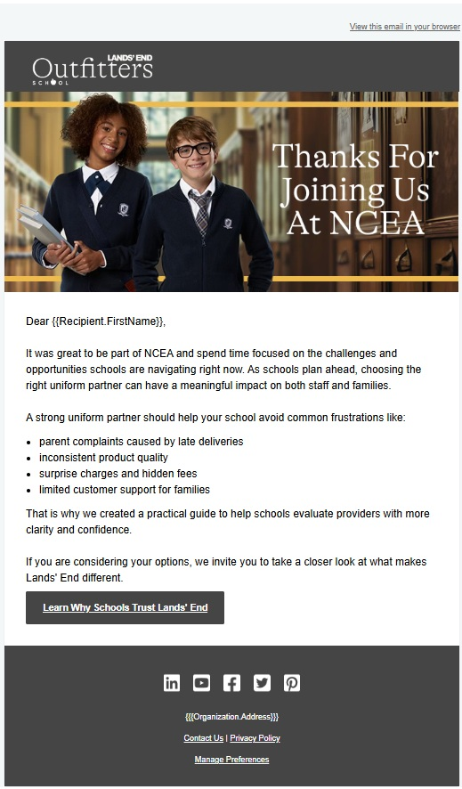

I turn campaign chaos into marketing systems that scale.
I connect customer psychology, campaign strategy, CRM data, automation, AI-assisted development, and sales processes to build marketing systems that work for humans and scale with the business.
I do more than build the asset. I think about the audience, the data, the handoff, the automation, the QA, the reporting question, the technical path, and what should happen next.

Marketing automation specialist, systems thinker, psychology nerd, sales ally, AI-enabled builder, and enthusiastic finder of broken workflow wires.
The throughline
Strategy that understands the customer. Systems that understand the data. Automation that understands what happens next.
How I use AI
AI gives my judgment a bigger toolbox.
I use AI as a technical collaborator, analyst, debugger, research partner, and rapid prototyping tool. It helps me work across disciplines that traditionally lived in separate roles, from campaign architecture and CRM logic to HTML, APIs, lightweight applications, process design, and technical troubleshooting.
The advantage is not knowing how to prompt AI. It is knowing enough about the problem to recognize whether the answer is actually good.
Five flagship stories
Case studies built around business problems, not a screenshot parade.
Each case study gets its own page so the homepage stays a launchpad instead of becoming an archaeological dig.

Back-to-School Campaign Ecosystem
Multi-audience seasonal marketing across timing groups, landing pages, email touches, resources, QA, and stakeholder coordination.
Read case study →
Webinar Registration + Lead Nurture
A journey connecting registration, confirmation, reminders, post-event follow-up, prospect behavior, and reporting.
Read case study →
Tradeshow to Follow-Up Journey
Pre-show, onsite, post-show, offer, and sales-follow-up touchpoints designed as one connected campaign path.
Read case study →GrizzlyJohn: A Product People Actually Use
A personalized mobile-first experience built around reflection, curiosity, recovery, exploration, memory, and real user adoption.
Read case study →CRM Adoption + Operational Improvement
Training, data quality, troubleshooting, documentation, and workflow redesign that helped teams use CRM more effectively.
Read case study →I like the work behind the work.
The segmentation, system design, customer behavior, CRM logic, handoffs, QA, reporting questions, technical problem-solving, and process cleanup are where good campaigns become reliable systems.